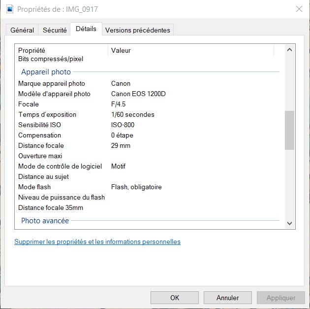
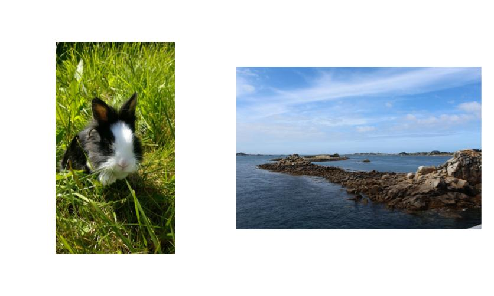
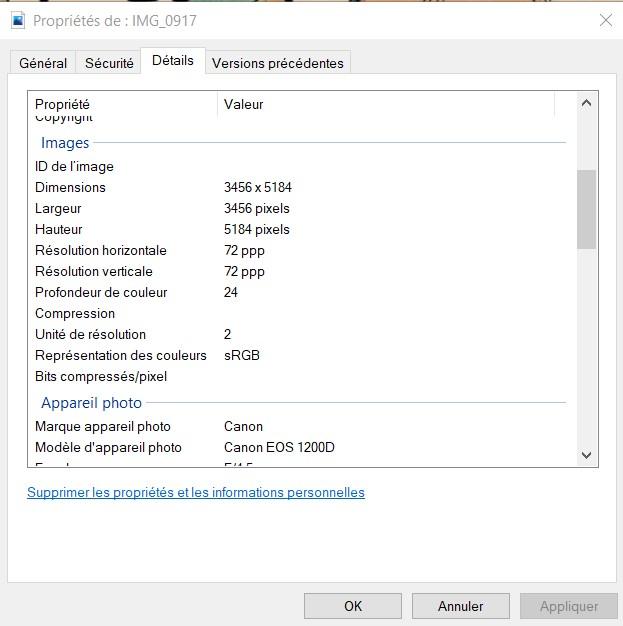

Les métadonnées
Outre les pixels, une quantité importante d'informations sont attachées à une photographie numérique : ce sont les métadonnées.
Dans les appareils numériques, les métadonnées sont automatiquement inscrites et conservées dans le fichier image (dont le format peut être . . . . . . . . . . . . . . . . . ) de chaque photographie.
L'ensemble de ces informations est appelé métadonnées EXIF (Exchangeable Image File Format). On y trouve par exemple :
- . . . . . . . . . . . . . . . . . . . . . . . . . . . . . . .
- . . . . . . . . . . . . . . . . . . . . . . . . . . . . . . .
- . . . . . . . . . . . . . . . . . . . . . . . . . . . . . . .
- . . . . . . . . . . . . . . . . . . . . . . . . . . . . . . .
- etc...
Il existe d'autres formats de métadonnées, comme le IPTC, qui contient des données sur l'auteur de la photographie.
 Définition :. . . . . . . . . . . . . . . . . . . . . . . . . . . . . . . . . . . . . . . . . . . . . . . . . . . . . . . . . . . . . . . . . . . . . . . . . . . . . . . . . . . . . . . . . . . . . . . . . . . . . . . . . . . . . . . . . . . . . . . . . . . . . . . . . . . . . . . . . . . . . . . . . . . . . . . . . . . . . . . . . . . . . . . . . . . . . . . . . . . . . . . . . .
Plus précisément, c'est un ensemble structuré d'informations décrivant une ressource quelconque.
-> l'orientation (paysage/portrait)Parmi les métadonnées d'une photographie, on trouve le type d'orientation. Lorsque le plus grand côté d'une photographie est sa hauteur, on dit qu'elle est orientée . . . . . . . . . . . . Lorsque le plus grand côté est la largeur, on dit que l'orientation est . . . . . . . . . . . . . . . . . Avec un smartphone, on a souvent le reflexe de photographier au format portrait. Avec un appareil photo, on utilise le format"paysage".

Les métadonnées EXIF peuvent contenir des informations telles que les coordonnées GPS précises du lieu où a été réalisé le cliché. Cela signifie que l'on peut indiquer par inadvertance sa position à quelqu'un avec une photographie.
La plupart . . . . . . . . . . . . . . . . . . . . . . . . . . . . . . suppriment les métadonnées des images qui leur sont soumises, mais sur les images transmises par courriel, les métadonnées sont conservées.
Dans le milieu médicalLes images médicales (radiographie, IRM, ...) sont généralement associées à des métadonnées au format DICOM(Digital Imaging and Communications in Medicine), qui embarquent des informations telles que le . . . . . . . . . . . . . . . . . . . . . . . . . . . . . . . . . . . . . . . . . . . . . . . . . . . . . . . . . . . . . . . . . . . . . . . . , mais aussi des commentaires des médecins. Toutes ces données peuvent être très personnelles.
Visualiser et éditer ces métadonnées
Les logiciels d'éditions d'images (tels que . . . . . . . . . . . . ), les systèmes exploitation (comme . . . . . . . . . . . . . .) ou encore des logiciels spécialisés permettent d'éditer manuellement les métadonnées.
Par exemple, il est possible d'en supprimer certaines (afin d'alléger le fichier ou d'en retirer des informations sensibles) ou d'ajouter des champs tels que "Titre", "Auteur", "Licence" ou "Mots-clés". Ce type de champs peut être précieux pour automatiser le classement et l'indexation des images.
Définition :L'indexation d'un document consiste à lui associer des métadonnées (par exemple, des mots clés) qui permettront, lors d'une recherche, de le retrouver automatiquement en fonction de critères déterminés.
Activité
- Connectez vous aux ordinateurs du lycée.
- Allez récupérer la photo mise à disposition sur pronote.
- Cliquez droit sur la photo et ouvrir le menu "Propriétés".
- Allez dans l'onglet "Détails" pour afficher les métadonnées.
- Ouvrez ensuite la photographie avec le logiciel Gimp.
- Dans le menu "Image", ouvrir la fenêtre "Propriétés de l'image".
- A l'aide d'un navigateur web, et des métadonnées que vous observez, dire où cette photographie à étéprise.
- Modifier les métadonnées de l'image en ajoutant votre nom comme "Auteur".
- Supprimer les coordonnées GPS.
- Ajouter un champs dans les métadonnées intitulé "Tags". Remplir le champs "Tags" avec des mots qui peuvent décrire la photo.
. . . . . . . . . . . . . . . . . . . . . . . . . . . . . . . . . . . . . . . . . . . . . . . . . . . . . . . . . . . . . . . . . . . . . . . . . . . . . . . . . . . .
- Inscrire cette modification dans l'image.
- Envoyer cette photo à la personne à coté de vous par courriel et vérifier que votre nom a bien été conservé dans les métadonnées.
- Quels sont les métadonnées obtenus avec l'interface graphique du système d'exploitation ? Et celles fournies par Gimp? Comparez-les.
- Quels sont les autres formats de métadonnées proposés par Gimp ? Quelles informations sont fournies dans cesformats ?
- La suppression et l'ajout de métadonnées sont-ils conservés après l'envoi par courriel ?
. . . . . . . . . . . . . . . . . . . . . . . . . . . . . . . . . . . . . . . . . . . . . . . . . . . . . . . . . . . . . . . . . . . . . . . . . . . . . . . . . . . .
. . . . . . . . . . . . . . . . . . . . . . . . . . . . . . . . . . . . . . . . . . . . . . . . . . . . . . . . . . . . . . . . . . . . . . . . . . . . . . . . . . . .
. . . . . . . . . . . . . . . . . . . . . . . . . . . . . . . . . . . . . . . . . . . . . . . . . . . . . . . . . . . . . . . . . . . . . . . . . . . . . . . . . . . .
Exercices
Exercice 1:Entourer la/les bonnes réponses :
- Dans les métadonnées d'une photographie, on peut trouver :
- Les métadonnées d'une photographie sont générées automatiquement lors de la prise de vue.
- La plupart des réseaux sociaux suppriment systématiquement les métadonnées des photographies.
la date de la prise de vue l'âge de l'utilisateur le modèle de l'appareil photo
vrai faux
vrai faux
Compléter la phrase :
Une métadonnée est . . . . . . . . . . . . . . . . . . . . . . . . Les métadonnées forment un ensemble structuré d'. . . . . . . . . . . . . . . . d'écrivant une . . . . . . . . . . . . quelconque.
Exercice 3:Expliquer avec vos mots, comment accéder aux métadonnées d'une image.
. . . . . . . . . . . . . . . . . . . . . . . . . . . . . . . . . . . . . . . . . . . . . . . . . . . . . . . . . . . . . . . . . . . . . . . . . . . . . . . . . . . . . . . . . . . . . . . . . . . . . . . . . . . . . . . . . . . . . . . . . . . . . . . . . . . . . . . . . . . . . . . . . . . . . . . . . . . . . . . . . . . . . . . .
Exercice 4:Voici les métadonnées d'une photographie :
- Combien de pixels cette photo contient-elle ?
- Quelle sont les dimensions de la photo ?
- Quel est la résolution de cette photo ?
- Quels types de métadonnées peuvent être sensibles ? Justifiez votre réponse.
. . . . . . . . . . . . . . . . . . . . . . . . . . . . . . . . . . . . . . . . . . . . . . . .
. . . . . . . . . . . . . . . . . . . . . . . . . . . . . . . . . . . . . . . . . . . . . . . .
. . . . . . . . . . . . . . . . . . . . . . . . . . . . . . . . . . . . . . . . . . . . . . . .
. . . . . . . . . . . . . . . . . . . . . . . . . . . . . . . . . . . . . . . . . . . . . . . . . . . . . . . . . . . . . . . . . . . . . . . . . . . . . . . . . . . . . . . . . . . . . . . . . . . . . . . . . . . . . . . . . . . . . . . . . . . . . . . . . . . . . . . . . . . . . . . . . . . . . . . . . . . . . . . . . . . . . . . .
JHermilier